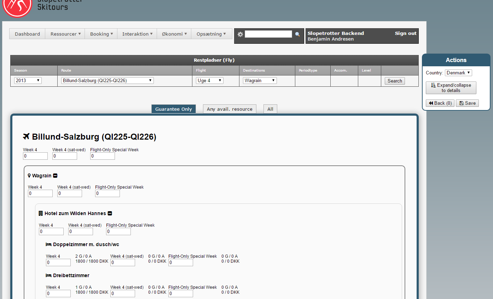
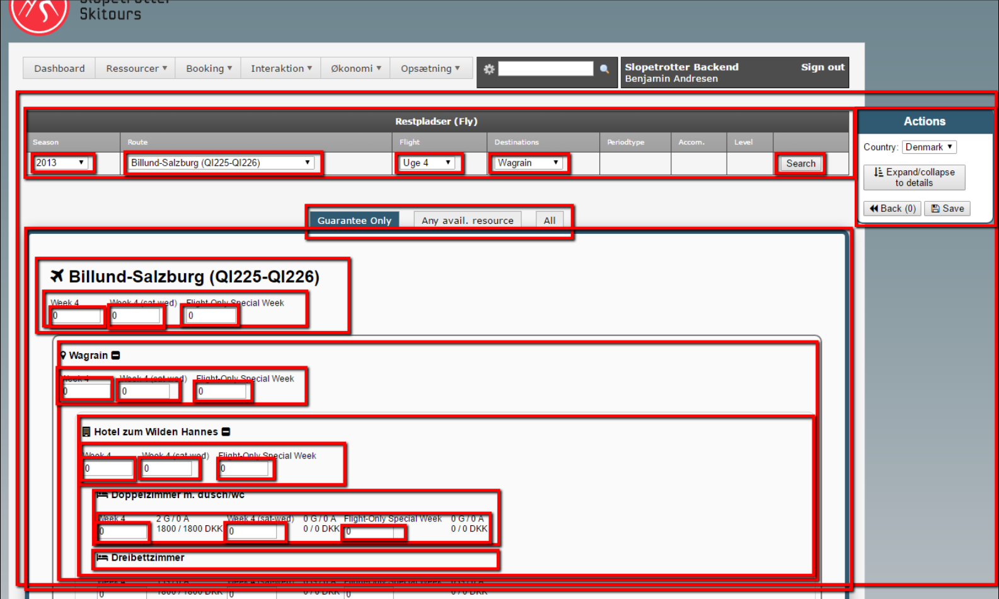
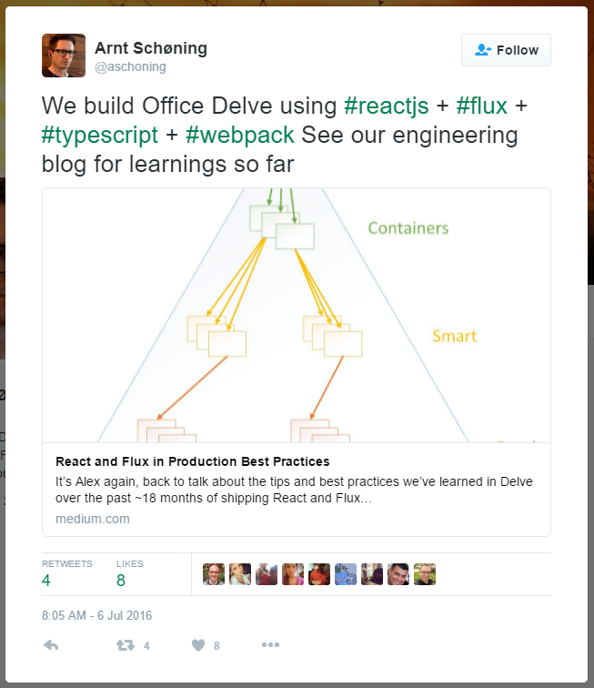
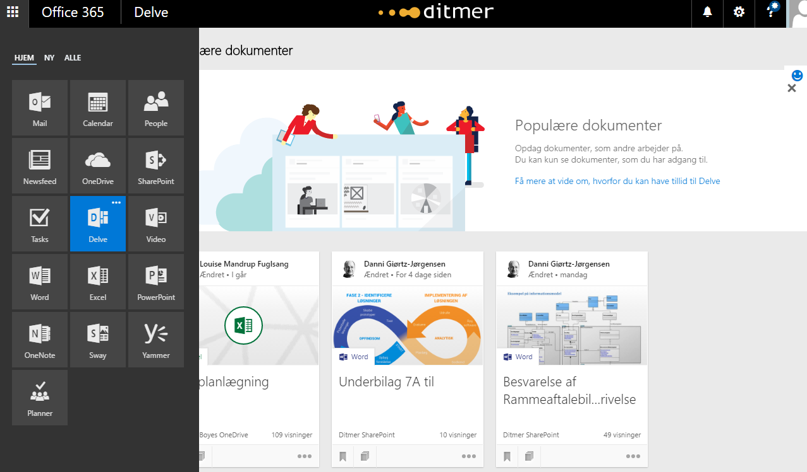

Intro til ReactJS
for C# udviklereDitmer Academy 2016
(Use touchdevice or arrowkeys to navigate)
- Hvad? (Hvad er ReactJS?)
- Hvorfor? (Hvorfor bruge ReactJS?)
- Hvordan? (Hvordan kommer man igang?)
- Shaving the Yak
- Avoid shaving the Yak
- Vis mig nu bare koden!
- Licens - issue?
- What's next?
- ReactFiber, ReactNative
Hvad?
Et JavaScript bibliotek til at skabe UI
Det beskrives ofte som V'et i MVC
Data-first paradigm
(That's not a thing!?)
Data er state er data er state
DOM first > Data-first
Vi modificerer ikke DOM'en, vi modificerer data og DOM'en følger (magisk) med.
Data-first paradigm
JQuery:
ReactJS:
Hvorfor bruge ReactJS. Top 3 grunde.
1. Fast
2. Fast
3. FAST
Andre grunde til at bruge ReactJS
Benyt den CPU power/RAM der er i klienten
Det er let at gemme vores frontend state og genskabe den.
New and exciting
Fordele / ulemper
FOR:
JavaScript / JSX / ReactJS er kun et viewlag
IMOD:
JavaScript / JSX / ReactJS er kun et viewlag
JavaScript development explained:


Editor: Atom
Udviklet af GitHub
Bygget helt i JavaScript (Electron http://electron.atom.io/)
Forstår ReactJS JSX syntax, inkl. code completion
Editor: Visual Studio Code
Udviklet af Microsoft
Free. Open source. Runs everywhere.
Forstår ReactJS JSX syntax, inkl. code completion
Hvorfor overhovedet bruge Atom eller Code?
Hvorfor have en ekstra editor ved siden af VS
Hvorfor sætte sig ind i en ny IDE
Traditionel webapp (f.eks. MVC + JQuery)
- CLASS og ID bruges i HTML for at kunne fanges med en JQuery selector
- HIDDEN fields bruges til lagre en initiel værdi og/eller sikre POST resultat
- Imperative beskrivelse af flow
- State er udtrykt i de individuelle DOM effekter (eller i HIDDEN fields)
ReactJS - Virtual DOM
Re-render alt (in-memory) hver gang data ændre sig:
- "Data-first" tankegang
- Declarative beskrivelse af UI flow
- En helt ny app renderes i memory
- Det mindste sæt af ændringer beregnes og pushes til DOM'en
Virtual DOM fordele
- Mere læsbar kode
Det er tydeligt hvad hver komponent gør - Hurtigt
Skrivning til DOM'en håndteres af ReactJS
Hvordan?
Thinking in React
https://facebook.github.io/react/docs/thinking-in-react.html
Thinking in React
Thinking in React
Data / State
JSX
- HTML lignende markup
- UI beskrives deklarativt inline i JS kode
- Relativt simpelt at forstå
- Oversættes til Vanilla-JavaScript for at det kan kører i alle browsere
JSX
JSX
HelloWorld.jsx:
Greeting.jsx:
JSX
Actions
Passing actions to your components
Shaving the Yak
"Any apparently useless activity which, by allowing you to overcome intermediate difficulties, allows you to solve a larger problem."
Shaving the Yak
- npm (NodeJS Package Manager)
- Babel (The compiler for writing next generation JavaScript)
- Grunt (The JavaScript Task Runner)
- GulpJS (the streaming build system)
- + "Linting" (analyse code for potential errors)
- + "Autoprefixer" (apply CSS prefixes)
- Webpack - loaders/tasks (Module Bundler)
- Browserify (Bundling of your dependencies)
- package.json "scripts": {"webpack": "webpack"} - npm run webpack
- TeamCity: install npm, NodeJS plugin, Build step
Shaving the Yak
- Start med at installere NodeJS fra https://nodejs.org/en/
- "npm init" for at skabe "package.json"
- "npm install --save-dev babel-loader"
Avoid shaving the Yak
- Start et .NET MVC project
- NuGet: React.Web.Mvc4 (Transpiler/Taskrunner)
- (Optional) NuGet: System.Web.Optimization.React (Bundler)

https://reactjs.net/
React.Web.Mvc4
"The files will automatically be compiled to JavaScript and cached server-side. No precompilation required. Perfect for development."
HelloWorld.jsx
https://reactjs.net/getting-started/tutorial_aspnet4.html
Hvordan kan man kalde .jsx scripts direkte?
Web.config:
Mindre tweak...
.\App_Start\ReactConfig.cs:
System.Web.Optimization.React
Bundle - for production
Ulemper ved at bruge React.NET
Ingen support for JavaScript Modules
:-(
Licens. Do you agree....
Yes yes yes - next next next
Additional Grant of Patent Rights Version 2
"Software" means the React software distributed by Facebook, Inc.
Facebook, Inc. ("Facebook") hereby grants to each recipient of the Software ("you") a perpetual, worldwide, royalty-free, non-exclusive, irrevocable (subject to the termination provision below) license under any Necessary Claims, to make, have made, use, sell, offer to sell, import, and otherwise transfer the Software. For avoidance of doubt, no license is granted under Facebook's rights in any patent claims that are infringed by (i) modifications to the Software made by you or any third party or (ii) the Software in combination with any software or other technology.
The license granted hereunder will terminate, automatically and without notice, if you (or any of your subsidiaries, corporate affiliates or agents) initiate directly or indirectly, or take a direct financial interest in, any Patent Assertion: (i) against Facebook or any of its subsidiaries or corporate affiliates, (ii) against any party if such Patent Assertion arises in whole or in part from any software, technology, product or service of Facebook or any of its subsidiaries or corporate affiliates, or (iii) against any party relating to the Software. Notwithstanding the foregoing, if Facebook or any of its subsidiaries or corporate affiliates files a lawsuit alleging patent infringement against you in the first instance, and you respond by filing a patent infringement counterclaim in that lawsuit against that party that is unrelated to the Software, the license granted hereunder will not terminate under section (i) of this paragraph due to such counterclaim.
A "Necessary Claim" is a claim of a patent owned by Facebook that is necessarily infringed by the Software standing alone.
A "Patent Assertion" is any lawsuit or other action alleging direct, indirect, or contributory infringement or inducement to infringe any patent, including a cross-claim or counterclaim.
Kort sagt:
Facebook, Inc. hereby grants you irrevocable license - subject to the termination provision below
The license granted hereunder will terminate [if your product takes] a direct financial interest in, any Patent
Assertion: (i) against Facebook or any of its subsidiaries or corporate
affiliates
"Du må ikke, lave noget der konkurerer med facebook eller sagsøge facebook for patentbrud."
"De siger på nettet..."
This is the reason why both Google and Microsoft employees are not allowed to use React.js in their work - according to Rob Eisenberg, creator of the Aurelia framework and a former member of the Angular 2 development team. - Written by Jorgé on Saturday July 16, 2016
Er det så slemt?
Arnt Schøning
Office Delve
til Office 365 og SharePoint
Arnt Schøning - Tweet

Office Delve

What's next for ReactJS?
React Fiber
React Fiber is an ongoing reimplementation of React's core algorithm. It is the culmination of over two years of research by the React team.
The goal of React Fiber is to increase its suitability for areas like animation, layout, and gestures. Its headline feature is incremental rendering: the ability to split rendering work into chunks and spread it out over multiple frames.
Other key features include the ability to pause, abort, or reuse work as new updates come in; the ability to assign priority to different types of updates; and new concurrency primitives.
What's next for React Developers
Mere info:
- https://facebook.github.io/react
- CodeSchool - Powering Up With React